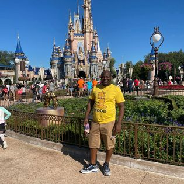

My name is Titus Ogunsanya. Born and raised in Lagos, Nigeria. I started my primary education at St Bernedette Nursery and Primary School in Ipaja Lagos and proceeded to Awori Anglican Comprehensive High School, Ipaja for my Secondary Education though inbetween I attended Abeokuta Grammer School for my JSS3 and SS1 for family reasons. I did my WAEC at Flourescent Academy, Ipaja.

After my secondary education, I was admitted to MAPOLY for my Diploma in Business Studies. I also had the priviledge of studying at LASU for my Bsc in Business Studies.
I joined Guaranty Trust Bank Plc in 2006, November 1, as a Junior Customer Servive representative and I proceeded to spend 10 years and 6 months where I rose through the ranks to Teller Captain before I eventually left for the United States of America.
I am happily married and blessed with 3 beautiful girls. We enjoy travelling together to new places especially with our extended family.
I joined ALT SCH to gain knowledge about Information Technology and how to manouver my way around a computer. After going through the courses offered by ALT SCH Africa, I saw this is where I want to be to gain the required knowledge for my chosen field and excel in the career path I have chosen.
I am determined to get all required knowledge and skills as desired as a cloud engineer and be ready to fit in any work environment I find myself in the nearest future as I embark on this wonderful new journey in IT.
Feel free to enjoy this lovely music
You can also enjoy this video